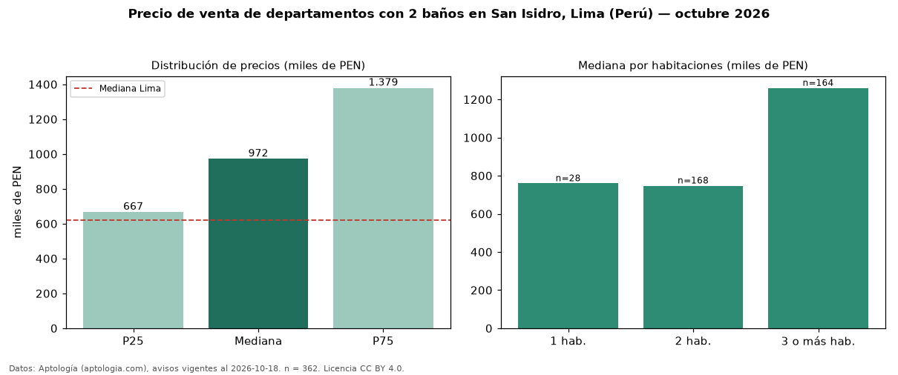

Precio de venta de departamentos con 2 baños en San Isidro, Lima (Perú) — octubre 2026
PEN 971.672 es el precio mediano de departamentos con 2 baños en venta en San Isidro, Lima (Perú) (n = 362 avisos). Eso es 7 % menos que la mediana de todos los departamentos en venta de San Isidro (PEN 1,04 millones, n = 721); este segmento reúne el 50 % de esos avisos. Por metro cuadrado, la mediana es PEN 8.833/m² (n = 350), 0 % por debajo del conjunto de referencia (PEN 8.877/m²). El área mediana anunciada es 110 m². El segmento con más oferta es el de 2 habitaciones (168 avisos, mediana PEN 747.694); pasar de 1 habitación a 3 o más habitaciones cambia la mediana +66 %. La cuota de mantenimiento o condominio mediana declarada es PEN 1,00 al mes (n = 29). La mitad central de los avisos va de PEN 666.734 a PEN 1,38 millones (razón 2,1), una dispersión alta. La mediana de todos los departamentos en venta de Lima es PEN 621.600 (+56 % de diferencia). Datos: Aptología (aptologia.com), CC BY 4.0 — https://www.aptologia.com/pe/venta/lima/san-isidro. Archivos: PDF, CSV con las cifras y gráfica PNG.

| Avisos únicos | 362 |
|---|---|
| Percentil 25 | COP 666.734 |
| Mediana | COP 971.672 |
| Percentil 75 | COP 1.378.686 |
| Mediana por m² | COP 8.832 |
Fuente: avisos vigentes de portales inmobiliarios recopilados por Aptología, deduplicados (mínimo 30 avisos únicos por celda). Precios pedidos, no cerrados. Fecha: 2026-10-18.